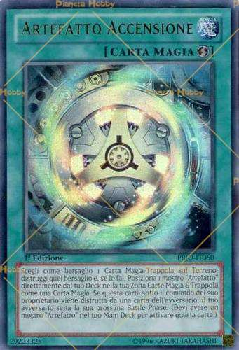

Incaricato del trattamento dei dati - Wikipedia

Incaricato del trattamento dei dati
Da Wikipedia, l enciclopedia libera. Jump to navigation Jump to searchL' Incaricato del trattamento dei dati è, ai sensi dell'art. 4, comma 1, lett. h) del decreto legislativo 30 giugno 2003, n. 196, noto come Codice della privacy , "la persona fisica autorizzata a compiere le operazioni di trattamento dal titolare o dal responsabile".
L'art. 30 del Codice precisa che le operazioni di trattamento possono essere compiute solo da soggetti nominati incaricati. Tale specificazione rende doverosa la designazione all'interno della struttura del titolare.
L'art. 30, inoltre, equipara la designazione per iscritto, in cui è puntualmente individuato l'ambito del trattamento alla semplice e documentata preposizione alle operazioni consentite di una persona fisica, nell'ambito della struttura del titolare. Si tratta di un'applicazione del principio di semplificazione di cui all'art. 2, comma 2, del Codice .
Voci correlate [ modifica | modifica wikitesto ]
Privacy Codice in materia di protezione dei dati personali Responsabile del trattamento dei dati Responsabile della protezione dei datiCollegamenti esterni [ modifica | modifica wikitesto ]
Sito del Garante per la protezione dei dati personali , su garanteprivacy.it . Portale Diritto Portale Italia Estratto da " https://it.wikipedia.org/w/index.php?title=Incaricato_del_trattamento_dei_dati&oldid=102379958 " Categorie : Diritto civile PrivacyMenu di navigazione
Strumenti personali
Accesso non effettuato discussioni contributi registrati entraNamespace
Voce DiscussioneVarianti
Visite
Leggi Modifica Modifica wikitesto CronologiaAltro
Ricerca
Navigazione
Pagina principale Ultime modifiche Una voce a caso Nelle vicinanze Vetrina Aiuto Sportello informazioniComunità
Portale Comunità Bar Il Wikipediano Fai una donazione ContattiStrumenti
Puntano qui Modifiche correlate Pagine speciali Link permanente Informazioni pagina Cita questa voce Elemento WikidataStampa/esporta
Crea un libro Scarica come PDF Versione stampabileIn altre lingue
Aggiungi collegamenti Questa pagina è stata modificata per l'ultima volta il 27 gen 2019 alle 12:34. Il testo è disponibile secondo la licenza Creative Commons Attribuzione-Condividi allo stesso modo ; possono applicarsi condizioni ulteriori. Vedi le condizioni d'uso per i dettagli. Informativa sulla privacy Informazioni su Wikipedia Avvertenze Versione mobile Sviluppatori Statistiche Dichiarazione sui cookie